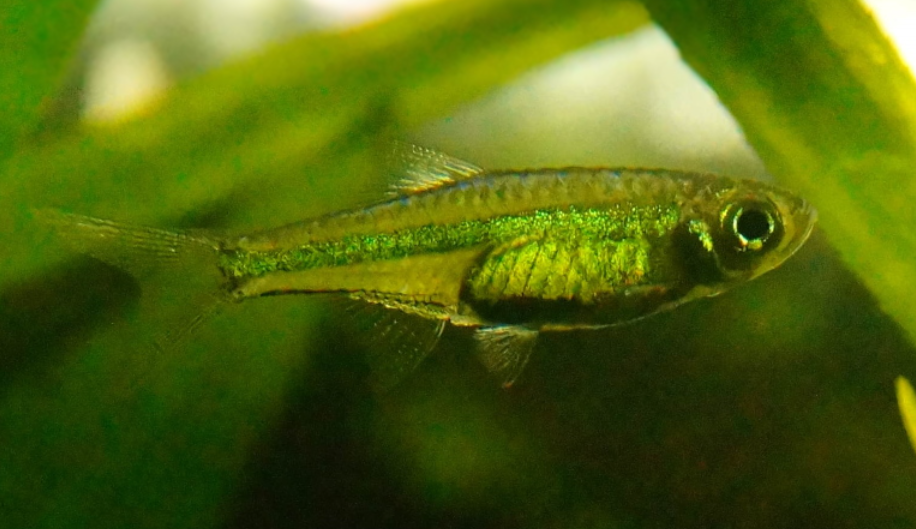

Systématique
- Ordre : Cypriniformes
- Famille : Danionidae
- Genre : Microdevario
- Espèce : M. kubotai
- Syn. : Microrasbora kubotai

Microdevario kubotai, communément appelé Rasbora émeraude ou Rasbora néon vert, est une espèce de cyprinidé miniature décrite récemment (1999) par Kottelat et Witte. Initialement classé dans le genre Microrasbora, il a été transféré dans le nouveau genre Microdevario en 2009.
C'est un poisson de très petite taille, mesurant entre 1,5 et 2,0 cm. Il possède un corps translucide traversé par une ligne latérale d'un vert jaune métallique intense et brillant, qui lui donne une apparence lumineuse unique, rappelant un néon vert.
C'est une espèce très prisée en aquascaping car sa couleur vive contraste magnifiquement avec les décors sombres et les plantes vertes.
C'est un poisson grégaire, vif et actif, qui doit impérativement être maintenu en banc d'au moins 10 individus. En groupe, ils forment une nuée étincelante très esthétique.
Il occupe principalement la zone médiane et supérieure de l'aquarium. Bien que petit, il apprécie le courant modéré et une eau bien oxygénée, contrairement à beaucoup d'autres "nanofish" qui préfèrent les eaux stagnantes. Il est totalement pacifique et cohabite bien avec les crevettes.
Mode : ovipare (diffuseur d'œufs).
La reproduction est possible en captivité. Les poissons dispersent leurs œufs en pleine eau ou parmi la végétation fine (mousse de Java).
Il n'y a aucun soin parental et les adultes mangent leurs propres œufs. Pour un élevage réussi, il est nécessaire d'isoler les reproducteurs ou de récupérer les œufs. Les alevins sont minuscules et nécessitent des infusoires ou de la nourriture liquide très fine au démarrage.
Dimorphisme sexuel : Les femelles adultes sont sensiblement plus grandes et présentent un abdomen plus rond et rebondi que les mâles. Les mâles sont souvent d'un vert plus intense et doré.
Espérance de vie : Environ 2 à 4 ans.
Il est originaire de la province de Ranong dans la péninsule thaïlandaise, ainsi que du bassin de la rivière Ataran au sud de la Birmanie (Myanmar).
Il habite les petits ruisseaux côtiers et les rivières à courant lent à modéré, aux eaux claires et bien oxygénées, souvent riches en plantes aquatiques (comme Cryptocoryne) et en racines immergées.
Répartition

Origine naturelle :
- Asie du Sud-Est.
- Thaïlande (Province de Ranong).
- Birmanie (Myanmar, Bassin de l'Ataran).
Paramètres de maintenance
Température : 22 à 27 °C.
pH : 6,0 à 7,5 (préfère l'eau neutre à légèrement acide).
GH : 2 à 12 °dGH (eau douce à moyennement dure).
Volume conseillé : Minimum 40 à 50 L. Bien que minuscule, c'est un nageur actif qui a besoin d'espace pour se déplacer en banc.
Régime alimentaire
Régime : carnivore / insectivore (micro-prédateur).
Dans la nature, il se nourrit de zooplancton et de larves d'insectes dérivant dans le courant.
En aquarium, il accepte les nourritures sèches fines, mais pour maintenir sa couleur éclatante, des apports réguliers de nauplies d'artémias, de daphnies ou de cyclops sont recommandés.